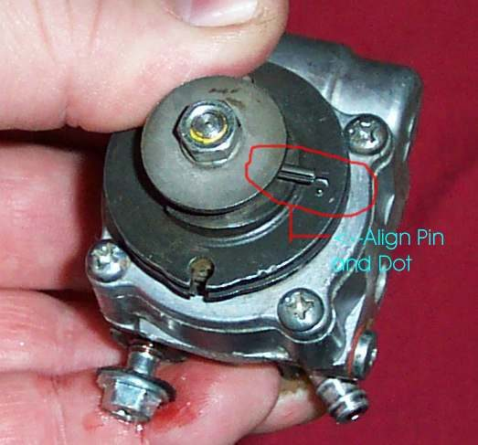
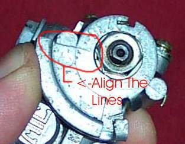
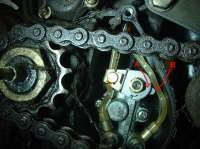
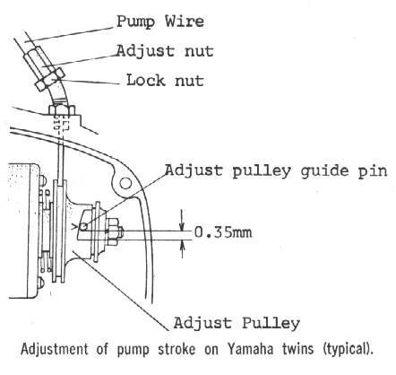
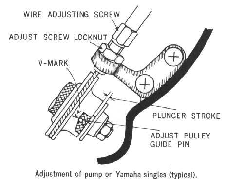
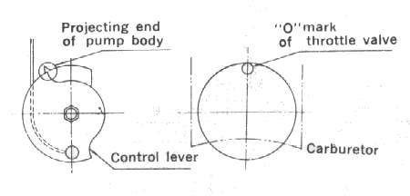
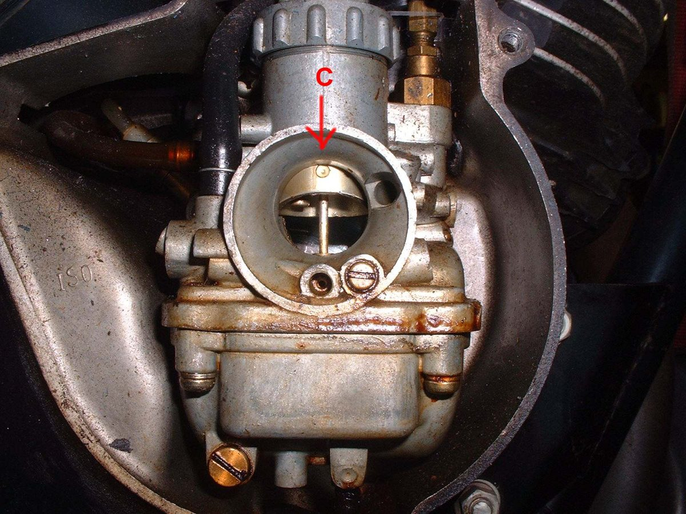
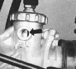

An oil injection pump is run by a cable from the throttle. The wider the throttle opens, the more oil the pump should deliver. The cable length sets where the pump starts to open. If it is set wrongly, the engine gets too little oil at speed or too much at idle.
Safety
- Engine off. Work on a cold engine.
- Too little oil at high speed seizes a two-stroke. Take care and follow the manual.
You need
- The manual for your pump and engine. Marks and methods differ.
Steps
- Find the pump and its cable. The cable has an adjuster with a lock nut near the pump or the throttle.
- With the throttle closed, check the cable has a little slack as the manual says.
- Open the throttle until the manual's reference is met. This varies: - Yamaha-type pump: line up the pin and the dot on the pump pulley. - Mikuni-type pump: line up the two lines on the pump. - Some older rotary valve engines: open the throttle until the mark on the carburettor slide meets the top of the carburettor bore, then line up the marks on the pump. Some need the throttle wide open for the alignment.
- Use the cable adjuster to lengthen or shorten the cable until the marks align at that throttle opening. Tighten the lock nut.
- If the manual gives no figure, set the pump so it reaches maximum delivery when the throttle is fully open.
- Open and close the throttle. The pump arm should move smoothly and return fully.
Check your work
- Marks align at the position the manual gives.
- Throttle and pump arm both return fully when released.